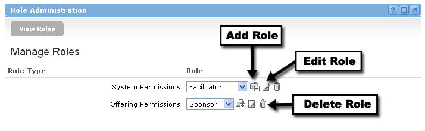

Role Administration Channel
Looking for more help options? Click Here
Role Administration : System Level and Offering Level
Role Permissions : Robust and Flexible
Groupware has two levels of user-defined roles: System Level and Offering Level. These roles are defined within the Role Administration channel found under the Administration link.
In most cases, the System Administrator facilitates the creation/editing of roles. However, the permission for this activity is completely flexible and can be allocated to any role by the System Administrator.
The Role Administration Channel also facilitates the setup and editing of permissions at the System and default Offering level. This information will be covered in the next lesson: Permissions and Security.

System Level Roles
A System Level Role corresponds to the role that users are assigned as they are added into the system. This role will impact the permissions that users will have within the Administration section of the Groupware. The following channels have permissions set through System level roles:
- Import Channel
- Navigation Channel
- Offering Administration Channel
- Role Administration Channel
- Topic Administration Channel
- User Administration Channel
In most cases, general users will have very limited permissions associated with the Administrative functions.
Offering Level Roles Offerings can be compared to the classes in a learning context or groups of like minded individuals. Users must be enrolled into offerings in order to take part in the course or group "offered" by an institution. An Offering Level Role corresponds to the role that users will play within an offering (e.g., student, instructor, member, observer). There are no limits to the number or types of roles that can be created at the offering level. The Offering Level Role will define all of the permissions that a role has within an offering. The following channels will have permissions set within the Offering level role:
|
Adding, Editing, and Deleting Roles Add -- To add a new role into the system, simply click the Add icon next to either the System Permissions or Offering Permissions within the Role Administration Channel. You will be prompted for a title of the new role, and will be asked to assign the specific permissions associated with this role. Once completed, click the Add button at the bottom of the Permissions list. Edit -- To edit an existing role in the system, find the associated role in the drop-down box, and then click the Edit icon next to either the System Permissions or Offering Permissions within the Role Administration Channel. You will have the opportunity to change the title of the role, as well as any of the permissions associated with that role. Delete -- To delete an existing role in the system, find the associated role in the drop-down box, and then click the Delete icon button next to either the System Permissions or Offering Permissions within the Role Administration Channel. You will be asked to confirm the deletion before it takes effect. |
Default Roles The Academus system comes with a variety of defaulted roles and permissions. These can be utilized "as is" or modified to meet your needs. These default roles, however, cannot be deleted from the system. The following is a list of default system level roles:
The following is a list of default offering level roles:
|
|
|
The system will not allow you to delete one of the default roles or a role that currently has individuals assigned. |
The groupware system within Academus has an extremely flexible and robust set of permissions. As discussed in the previous lesson, the administrator can setup a variety of roles. The permissions surrounding these roles can be set at 4 different levels: 1) System level role permissions, 2) Offering level default role permissions, 3) Offering level customized role permissions, 4) Offering Level customized individual permissions.

System Level Role Permissions
The administrator will set the System level permissions within the Role Administration Channel. This process was explained during the Roles Administration lesson. These permissions primarily correspond to the Administrative features of the Groupware channels (e.g., Add Offerings, Add Roles, Add Users, etc.) and will be allocated to administrative users only. The one permission at this level that may be available to all users is the "Change Password / Change email" option.
These System level permissions can be altered by anyone with the correct permissions at any time. Any changes to permissions will take effect the next time a user logs into the system.
Offering Level Default Role Permissions Within the Role Administration Channel, the Administrator will also setup the default permissions for roles within offerings. These permissions correspond to the various channels that exist within an offering (e.g., Chat, Discussion Forums, Gradebook, etc.). When a user is enrolled into an offering, they will be assigned a role. The permissions set by the Offering Permissions option will set the defaults for all individuals in these roles as they are enrolled into the offering. These defaults can also be viewed within the Roster Channel. A drop-down box labeled Types can be found at the top of the roster channel. Simply pick a role from this box, and click the Edit icon. This will list all of the permissions for the associated role within the current offering. This process is detailed specifically within the Roster Channel unit of this course. |
Offering Level Customized Role Permissions Even though the administrator of the system has created a default set of permissions for various roles, these can be overwritten within an offering. For example, the "Sponsor" of a particular offering may want to grant all of the "Assistants" within his/her offering the ability to add announcements. The manipulation of role-based permissions within an offering is facilitated through the Roster Channel. This capability is explained later in this course. |
Offering Level Customized Individual Permissions In some instances, it may be necessary to update the permissions of specific individuals within an offering. This is also facilitated through the roster and will be explained later in this course. |